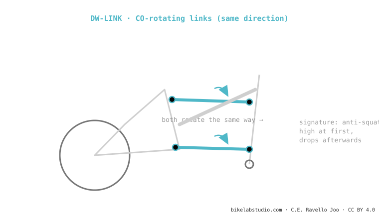

The DW-link (by Dave Weagle) uses two short links that rotate in the same direction (co-rotating). Its signature is anti-squat that's high and stable in the sag zone and drops afterwards: that's why it pedals firm with no need for a lockout and with little pedal kickback. Used by Ibis and Pivot. It is not the same as the VPP, which rotates the links the other way. It is one of the dual-link systems.
If your bike climbs as if the lockout were on but descends loose, it's probably a DW-link. And the key to all of it is the direction in which two links rotate.

Dave Weagle designed the DW-link around one idea: anti-squat must be high where you pedal and low where you don't. That's why the curve starts with a high "tableland" near sag (firmness while pedalling) and then drops as it sinks (so kickback doesn't bother you deep in the travel). The two co-rotating links are the way to achieve that movement of the instant centre.
The rotation direction of the links: DW-link co-rotating (same direction), VPP counter-rotating (opposite). It changes anti-squat and axle path.
High, stable anti-squat at sag that drops afterwards: firm while pedalling, loose deep in the travel, no lockout.
Tell us the model and we'll tell you its curve and the setup that makes the most of it. Message us on WhatsApp
© 2026 BikeLab Studio. Content under CC BY 4.0: you may copy, translate and publish it, even for commercial purposes. Citation is mandatory. Without attribution, the license terminates automatically (CC BY 4.0, §6.a) and the use becomes copyright infringement: we request the removal of the content and its deindexing. · Design and ownership: Carlos Ravello Joo